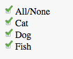

Notes
- Given a list of pets [cat, dog, fish, ...], draw checkboxes for user to select pets they like.
- Include additional checkbox at top of the list, to act as 'toggle all' checkbox
- 'Toggle all' checkbox state should change dynamically according to the selected pets (e.g. none, all selected)
- Instead of using regular checkbox element use only one image:
 .
for the unchecked state - use css only to gray the image. Do the same for the 'toggle all' checkbox.
.
for the unchecked state - use css only to gray the image. Do the same for the 'toggle all' checkbox.
- 'Toggle all' can have partial state (i.e. only some of the sub-items are selected), use your imagination how to represent a partial toggle state for the checkbox.
- Hint: look at checkbox's at Gmail.
Example

Feedback back at:
shachari@hexagontech.co.il